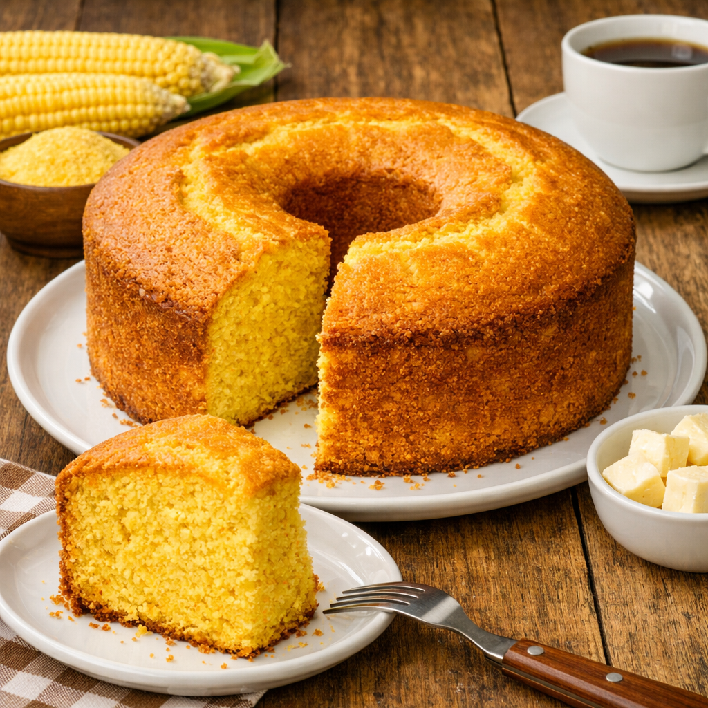

Bolo de Fubá

Ingredientes:
| Ingrediente | Quantidade |
|---|---|
| Fubá | 2 xícaras |
| Açúcar | 1 e 1/2 xícaras |
| Farinha de trigo | 1 xícara |
| Ovos | 3 unidades |
| Leite | 1 xícara |
| Óleo | 1/2 xícara |
Modo de Preparo:
- Bata todos os ingredientes no liquidificador
- Coloque em uma forma untada e enfarinhada
- Leve ao forno pré-aquecido a 180°C por cerca de 40 minutos